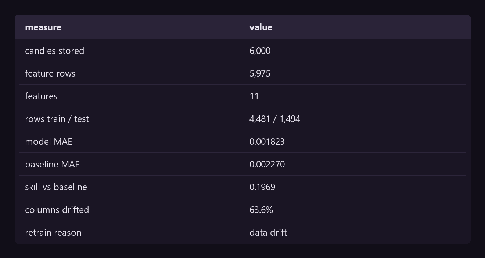
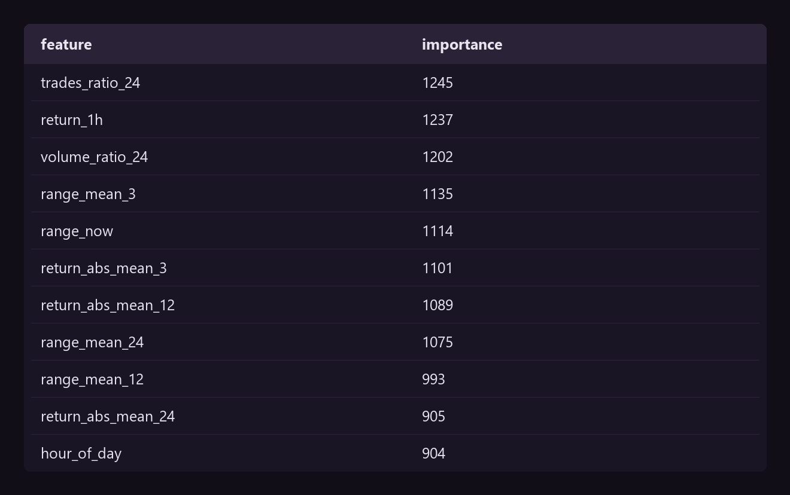
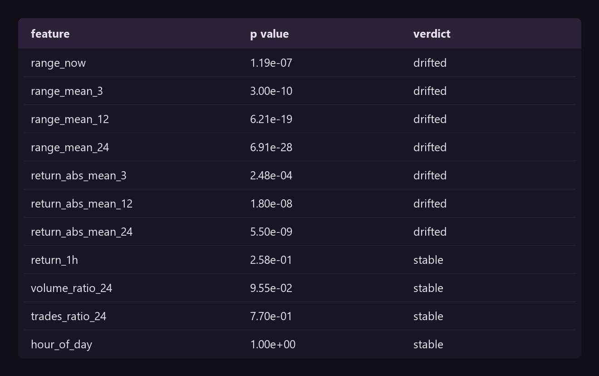
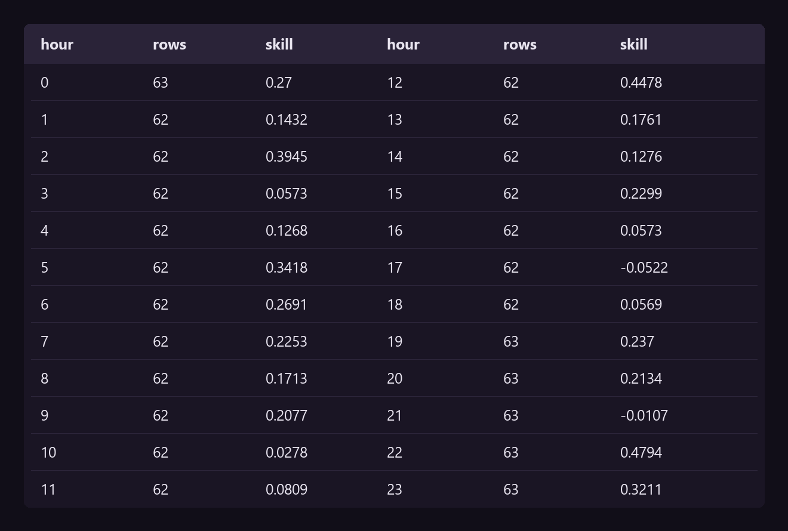

The three projects before this one end in a notebook. A notebook proves an analysis. It does not prove that the work survives Monday, when the data changes and nobody is watching.
This project answers the other half. The subject is the hourly volatility of Bitcoin, chosen because it is small and because nobody needs the answer. That leaves the engineering with nowhere to hide.
Google defines three levels of MLOps maturity. Level 0 is manual. Level 1 automates the training. Level 2 deploys the pipeline itself through CI/CD. This project is level 2.
ML Test Score28 tests
An MLOps project that calls itself production ready and offers no evidence is a claim, not a result. There is a published rubric for this.
Breck and others, at Google, define 28 tests in four sections: data, model, infrastructure and monitoring. A test scores half a point when a person runs it, and one point when a machine runs it repeatedly.
The final score is the minimum of the four sections, not the average. A system is only as production ready as its weakest side.
The paper reads anything above 3 as strong automated testing and monitoring. The three gaps that hold the score down are named in the repository, not hidden.
BinanceDuckDBidempotent
Hourly candles for BTCUSDT, from the public Binance endpoint. No key, no account, 6,000 hours from December 2025 to August 2026.
The scheduled job asks for 200 hours when it only needs one. That overlap is the point: if a run fails at three in the morning, the run at four repairs the gap without anybody waking up.
The overlap only works if writing twice changes nothing.
The write is idempotent, and a test proves it
def test_running_the_same_load_twice_changes_nothing(db):
frame = candles(100)
append_candles(db, frame)
written = append_candles(db, frame)
assert written == 0
assert len(read_candles(db)) == 100Answer. The second pipeline run on real data reported rows_written: 0 against 6,000 stored. The guarantee holds outside the test.
point in timeleakage test
This is the test that separates a pipeline from a script, and it is the reason the whole project exists.
A feature that reads a row from the future inflates every metric that follows. Nothing warns you. The backtest looks excellent and the live model is worthless.
So the test builds the features, scrambles every row after one hour, rebuilds, and demands that the hour did not move.
The leakage test, run on every commit
def test_no_feature_reads_the_future():
"""Change everything after one hour. The features of that hour must hold."""
frame = candles()
cut = 200
tampered = frame.copy()
rng = np.random.default_rng(99)
for column in ["open", "high", "low", "close", "volume"]:
tampered.loc[cut + 1:, column] *= rng.uniform(2, 5, len(tampered) - cut - 1)
before = build_features(frame)
after = build_features(tampered)
hour = frame.open_time.iloc[cut]
row_before = before[before.open_time == hour][FEATURE_COLUMNS].to_numpy()
row_after = after[after.open_time == hour][FEATURE_COLUMNS].to_numpy()
assert len(row_before) == 1
np.testing.assert_allclose(row_before, row_after, rtol=1e-12,
err_msg="a feature read a row from the future")Eleven features come out of it: the current range, three rolling ranges, three rolling absolute returns, the last return, volume and trades against their daily mean, and the hour of the day.
Answer. Only one column looks forward, and it is the label.
LightGBMtime splitskill
The target is the range of the coming hour, as (high - low) / close.
The split follows time. A random split on a series trains on the future and tests on the past, and the number it reports is a fiction.
The score is not the error. The score is the error against what a person gets for free, which is to repeat the hour that just closed.
Skill is the share of the free error the model removes
def baseline_prediction(features: pd.DataFrame) -> np.ndarray:
"""The free forecast: the coming hour looks like the hour that just closed."""
return features["range_now"].to_numpy()
Answer. Skill of 0.197. The model removes a fifth of the error the free forecast makes. Zero would mean it earned nothing.

Trade count and volume rank above the rolling ranges, which is worth noting. The market tells you how wide the next hour will be through how many people are trading, more than through how wide the last hour was.
MLflowchampionrollback
A pipeline that retrains and ships whatever comes out is worse than one that never retrains. It replaces a working model with noise.
Every run trains a challenger. The challenger replaces the champion only when it cuts the error by 2%. A tie keeps the champion, because a win of one digit is noise and not improvement.
The gate, and the first model
def promote(champion_mae: float | None, challenger_mae: float) -> bool:
"""Decide whether the challenger replaces the champion.
Args:
champion_mae: the error of the model now in production, or None when
no model is serving yet.
challenger_mae: the error of the model that just trained.
Returns:
True when the challenger wins by at least `MIN_IMPROVEMENT`.
"""
if champion_mae is None:
return True
return challenger_mae < champion_mae * (1 - MIN_IMPROVEMENT)Promotion moves an alias in the MLflow registry. Rolling back is moving the same alias to the version before it, and the old model is still there.
Answer. The second run produced an identical challenger and the gate reported promoted: False. It refused to churn the model for nothing.
KS testrolling skillauto retrain
A model decays in two ways, and a pipeline has to tell them apart.
Retraining fires on a threshold. A calendar retrains a healthy model and hides a sick one.
The decision, with its reason
def retrain_needed(share_drifted: float, skill: float, explain: bool = False):
"""Decide whether the pipeline retrains now.
Args:
share_drifted: the share of feature columns that moved.
skill: the rolling skill on hours whose truth has arrived.
explain: return the reason beside the decision.
Returns:
The decision, and the reason when `explain` is true.
"""
if share_drifted > DRIFT_THRESHOLD:
return (True, "data drift") if explain else True
if skill < SKILL_FLOOR:
return (True, "skill floor") if explain else True
return (False, "healthy") if explain else False
Answer. Seven of the eleven columns moved between the two windows, which is 63.6%. The pipeline asked for a retrain and named the reason.
Every range and return column drifted. Volume, trades and the hour of the day did not. Bitcoin changed volatility regime inside the sample, and the monitor caught it without anybody looking.
slice analysis
The ML Test Score asks whether quality holds on every important slice. The overall skill of 0.197 is one number over 1,494 hours, and one number can hide a lot.

Answer. Skill ranges from 0.48 at midday to below zero at 17:00 and 21:00. In those two hours the model loses to the free forecast.
A team that ships on the average ships a model that is worse than nothing for two hours of every day. That is exactly the failure the rubric is written to catch.
The subject was chosen to be worthless. Every finding below is about the machine that produced the answer.
The lesson the three earlier projects could not carry: an analysis is finished when it is correct, and a system is finished when it stays correct without you.
Six assets, 56 tests, the CI workflow, and the ML Test Score line by line.
View on GitHub